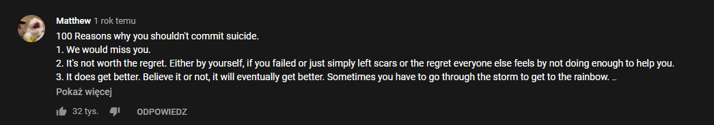

Do you feel bad or down? Are you thinking about suicide? Here you got 100 reasons why you shouldn't do this
Also check out original YouTube comment from Matthew on this video, where i found this.

1. We would miss you.
2. It's not worth the regret. Either by yourself, if you failed or just simply left scars or the regret everyone else feels by not doing enough to help you.
3. It does get better. Believe it or not, it will eventually get better. Sometimes you have to go through the storm to get to the rainbow.
4. There's so much you would miss out on doing.
5. There is always a reason to live. It might not be clear right now, but it is always there.
6. So many people care, and it would hurt them if you hurt yourself.
7. You ARE worth it. Don't let anyone, especially yourself, tell you otherwise.
8. You are amazing.
9. A time will come, once you've battled the toughest times of your life and are in ease once again, where you will be so glad that you decided to keep on living. You will emerge stronger from this all, and won't regret your choice to carry on with life. Because things always get better.
10. What about all the things you've always wanted to do? What about the things you've planned, but never got around to doing? You can't do them when you're dead.
11. I love you. Even if only one person loves you, that's still a reason to stay alive.
12. You won't be able to listen to music if you die.
13. Killing yourself is never worth it. You'll hurt both yourself and all the people you care about.
14. There are so many people that would miss you, including me.
15. You're preventing a future generation, YOUR KIDS, from even being born.
16. How do you think your family would feel? Would it improve their lives if you died?
17. You're gorgeous, amazing, and to someone you are perfect.
18. Think about your favorite music artist, you'll never hear their voice again...
19. You'll never have the feeling of walking into a warm building on a cold day
20. Listening to incredibly loud music
21. Being alive is just really good.
22. Not being alive is really bad.
23. Finding your soulmate.
24. Red pandas
25. Going to diners at three in the morning.
26. Really soft pillows.
27. Eating pizza in New York City.
28. Proving people wrong with your success.
29. Watching the jerks that doubted you fail at life.
30. Seeing someone trip over a garbage can.
31. Being able to help other people.
32. Bonfires.
33. Sitting on rooftops.
34. Seeing every single country in the world.
35. Going on road trips.
36. You might win the lottery someday.
37. Listening to music on a record player.
38. Going to the top of the Eiffel Tower.
39. Taking really cool pictures.
40. Literally meeting thousands of new people.
41. Hearing crazy stories.
42. Telling crazy stories.
43. Eating ice cream on a hot day.
44. More Harry Potter books could come out, you never know.
45. Traveling to another planet someday.
46. Having an underwater house.
47. Randomly running into your hero on the street.
48. Having your own room at a fancy hotel.
49. Trampolines.
50. Think about your favorite movie, you'll never watch it again.
51. Think about the feeling of laughing out loud in a public place because your best friend has just sent you an inside joke,
52. Your survival will make the world better, even if it's for just one person or 20 or 100 or more.
53. People do care.
54. Treehouses
55. Hanging out with your soul mate in a treehouse
55. Snorting when you laugh and not caring who sees
56. I don't even know you and I love you.
57. I don't even know you and I care about you.
58. Nobody is going to be like you ever, so embrace your uniqueness!
59. You won't be here to experience the first cat world emperor.
60. WHAT ABOUT FOOD?! YOU'LL MISS CHOCOLATE
61. Starbucks.
62. Hugs.
63. Stargazing.
64. You have a purpose, and it's up to you to find out what it is.
65. You've changed somebody's life.
66. You could change the world.
67. You will meet the person that's perfect for you.
68. No matter how much or how little, you have your life ahead of you.
69. You have the chance to save somebody's life.
70. If you end your life, you're stopping yourself from achieving great things.
71. Making snow angels.
72. Making snowmen.
73. Snowball fights.
74. Life is what you make of it.
75. Everybody has talent.
76. Laughing until you cry.
77. Having the ability to be sad means you have the ability to be happy.
78. The world would not be the same if you didn't exist.
79. It's possible to turn frowns, upside down
80. Be yourself, don't take anyone's shit, and never let them take you alive.
81. Heroes are ordinary people who make themselves extraordinary. Be your own hero.
82. Being happy doesn't mean that everything is perfect. It means that you've decided to look beyond the imperfections.
83. One day your smile will be real.
84. Having a really hot, relaxing bath after a stressful day.
85. Lying on the grass and laughing at the clouds.
86. Getting completely smashed with your best friends.
87. Eating crazy food.
88. Staying up all night watching your favorite films with a loved one.
89. Sleeping in all day.
90. Creating something you're proud of.
91. You can look back on yourself 70 years later and be proud you didn't commit suicide.
92. Being able to meet your Internet friends.
93. Tea / Coffee / Hot Chocolate
94. The new season of Sherlock
95. Cuddling under the stars.
96. Being stupid in public because you just can.
97. If you are reading this then you are alive! Is there any more reason to smile?
98. Being able to hug that one person you haven't seen in years
99. People care enough about you and your future to come up with 100 reasons for you not to do this.
100. But, the final and most important one is, just, being able to experience life. Because even if your life doesn't seem so great right now, anything could happen.